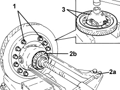
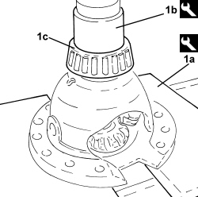

2110D20 DIFFERENTIAL INTERNAL CASING, REMOVED - DISMANTLING AND REASSEMBLY, CHECK PLANET AND SATELLITE GEARS
- Path
- Procedures > 21 GEARBOX UNIT > 2110 MANUAL GEARBOX WITH DIFFERENTIAL > 2110D MANUAL GEARBOX DIFFERENTIAL > 2110D20 DIFFERENTIAL INTERNAL CASING, REMOVED - DISMANTLING AND REASSEMBLY, CHECK PLANET AND SATELLITE GEARS
- Kind
- repair procedure (removal / refitting; the operation number is the code)
- Applies to
- engines: 2.2 JTS; all production periods
- Interactive page
- https://sloeber94.github.io/elrnDB-aBrrSpdr/en/#/946002066
Applies to: engines: 2.2 JTS; all production periods
 Removing
Removing
 Refitting
Refitting1. Fit the differential internal casing in a vice and undo the bolts (1a) fixing the ring gear to the differential internal casing using a suitable tool.
2. Remove the bearings (2b) using a suitable extractor (2a).
3. Fit the differential internal casing on a suitable gauge and separate the ring gear from the differential internal casing.

Applies to: engines: 2.2 JTS; all production periods
Refitting
Removing- Fit the differential ring gear in the differential internal casing using a rubber hammer and taking care to align the openings for the fixing bolts.
- Fit the ring gear in the differential internal casing using new bolts to be tightened to the recommended torque.
Component | Fastening | dia | Value (daNm) | Validity |
|---|---|---|---|---|
Manual gearbox-differential ring gear | Bolt | M10 x 1.25 | 6.0 + 90° |
Applies to: engines: 2.2 JTS; all production periods
1. Fit the new bearings (1c) on the press using the tools (1a) and (1b).
Tool | Description | Function | Validity |
|---|---|---|---|
2000005000 | Plate | Reaction plate in the press | 2.2 JTS |
Tool | Description | Function | Validity |
|---|---|---|---|
2000005300 | Fitting tool | Fitting differential bearing | 2.2 JTS |
